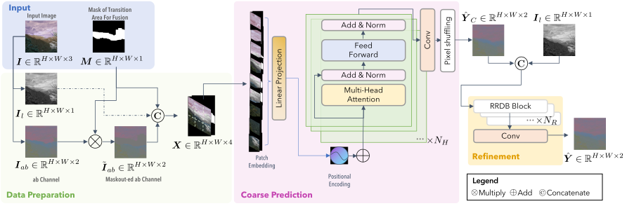

Architecture

Tackling spatial inconsistencies from varied color edits, CFNet treats them as an image color inpainting problem. The process commences with an RGB to CIELab conversion, followed by mask application to produce an incomplete ab channel. The encoder, built on Vision Transformer (ViT), processes the input into global receptive fields, while the pixel-shuffling based decoder yields the coarse inpainting outcome. Lastly, the Refinement Module, rooted in the Residual-in-Residual Dense Block (RRDB), further refines the output, capitalizing on a deep and feature-rich design, ensuring boundary smoothing and enhanced color coherence.
 We further extend the analysis to encompass comparisons with image inpainting techniques. This extended evaluation provides a more thorough assessment of CFNet's performance and reveals its wide-ranging applicability in the context of color fusion tasks.
We further extend the analysis to encompass comparisons with image inpainting techniques. This extended evaluation provides a more thorough assessment of CFNet's performance and reveals its wide-ranging applicability in the context of color fusion tasks.